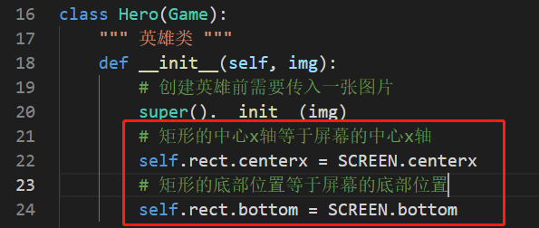

初始位置
初始位置代表着你的角色的出生点，这个也是一个比较重要的环节。设置初始位置不需要大量的代码，只需要在模型类中添加一个矩形的xy轴即可。
我方飞机的初始位置：
- 在jingling.py中的初始化函数中写 ，即 \_init__()_
jingling.py
class Hero(Game):
...
def __init__(self, img):
...
# 矩形的中心x轴等于屏幕的中心x轴
self.rect.centerx = SCREEN.centerx
# 矩形的底部位置等于屏幕的底部位置
self.rect.bottom = SCREEN.bottom

- 再次点击运行，便能看到飞机出现在屏幕底部的中心位置了。
敌方飞机随机位置：
为了展现得更生动，敌人需要随机出现，也就是说它的初始xy轴是一个随机数，那这个随机数的范围是屏幕的宽度范围。
- 已知屏幕的宽度是 512 ,则敌人的随机初始位置可以是 0~512
jingling.py
class Enemy(Game):
...
def __init__(self, img):
...
# 初始的随机出生点
x = randint(0, 512)
# 设置敌人的x轴位置,x轴需要减去飞机的宽度，否则会超出屏幕外
self.rect.left = x - self.rect.width
# 如它超出了x轴的0的位置，让它出现在0的位置
if self.rect.x < 0:
self.rect.x = 0
》 ok, 敌人已经随机出现在x轴上了，下节让它向前移动。